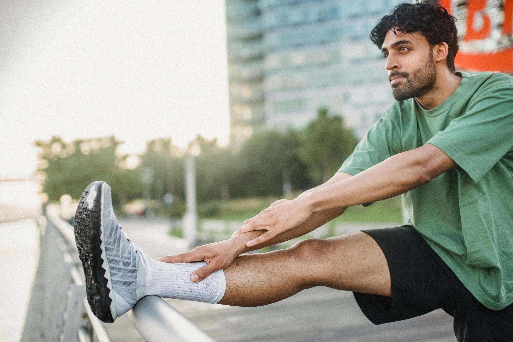

Welcome

This website is designed for beginners who want to improve their fitness without complicated programs. Whether you are starting from zero or getting back into training, this guide keeps things simple.
Fitness doesn’t need to be complicated. We break down training and nutrition into simple steps. Staying active improves energy, mental health, and physical strength.